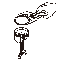
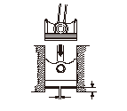
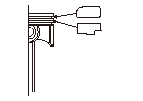
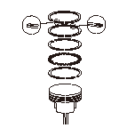
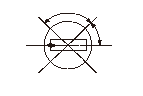
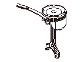

ピストン リングの点検、交換
取外し
ピストン/コンロッドAssy.を取外す。
ピストン リングを取外す。
•
取外したリングは各ピストンごとに整理しておく。
•
ピストンに傷をつけないように注意する。

合口すき間の点検
ピストン リング（A）をシリンダ下部（底部から15
－
20mm）に挿入し、合口すき間（B）を測定する。
•
合口すき間が大き過ぎる場合は、新しいピストン リングを取付け再度測定する。次にシリンダ ブロックの内径を点検する。
リングをシリンダ ブロックに入れる際はピストン リングが水平になるようピストン頭部で押込む。
トップ リング
標準値:
0.15－0.30mm
限度値:
0.6mm
セカンド リング
リケン製:
標準値:
0.30－0.42mm
限度値:
0.65mm
日本ピストン リング製:
標準値:
0.35－0.50mm
限度値:
0.65mm
オイル リング
標準値:
0.20－0.70mm
限度値:
0.8mm

取付け
ピストン リングを取付ける。
•
ピストン リングを取付ける前にピストンのリング溝をきれいに洗浄しておく。
•
トップ リングにはRマークまたは1Nマークが、セカンド リングには2Rマークまたは2Nマークが付いているので、取付け位置を間違えないように注意する。
•
ピストン リングはマークを上に向けて取付ける。
•
ピストンに傷をつけないように注意する。
各ピストン リングを取付けた後、手で回して軽く動きひっかかりのないことを確認する。

ピストン リング取付け位置:

各ピストン リングの合口を図のように合わせる。
各ピストン リングの合口は、ピン穴方向およびピンとの直角方向を避ける。

ピストン リングと溝のすき間点検
ピストン リングとリング溝のすき間を測定する。
トップ リング
リケン製:
標準値:
0.065－0.090mm
限度値:
0.15mm
日本ピストン リング製:
標準値:
0.061－0.090mm
限度値:
0.15mm
セカンド リング
標準値:
0.030－0.055mm
限度値:
0.12mm


 リングをシリンダ ブロックに入れる際はピストン リングが水平になるようピストン頭部で押込む。
リングをシリンダ ブロックに入れる際はピストン リングが水平になるようピストン頭部で押込む。